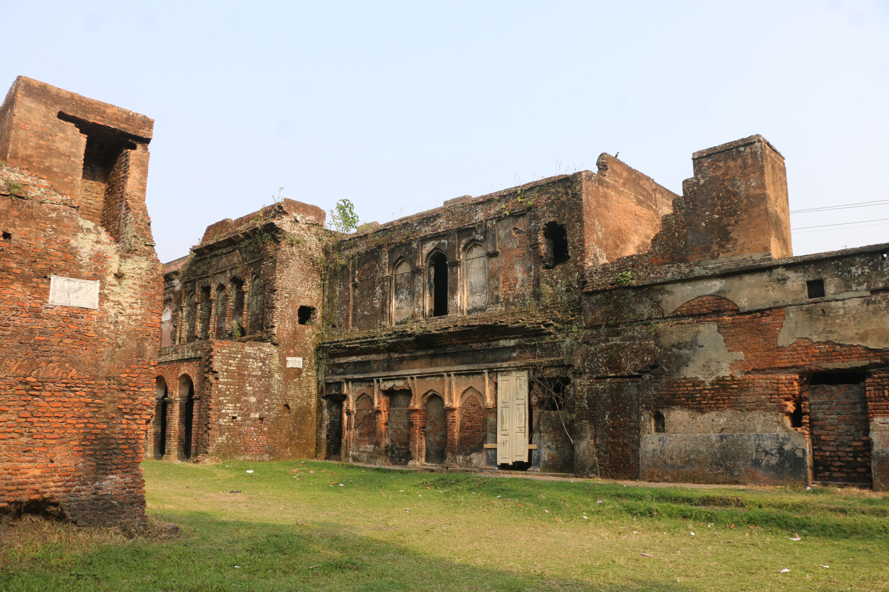
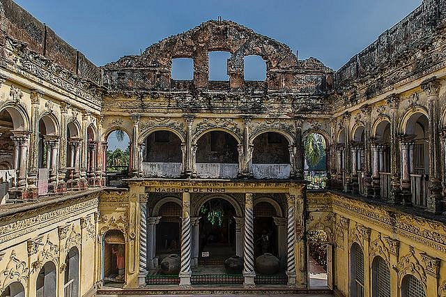

I like to travel. I am a travel freak. I have visited many place. whenever i get free time i try to explore any place it would be far or near. Because i get fresh whenever I go to in greeny place and it gives me pleasure. Today i want to share about a place where i have visited recently with my varsity friend. The place name is Panam City or Panam Nagor. it is an ancient city. It is situated at Sonargaon, Narayanganj in Bangladesh. It is one of the earliest cities in Bangladesh that is still standing. Among the three cities of the time period: Boro nagar, Khas Nagar and Panam Nagar; Panam Nagar was the most attractive one. I have visited this city in my semester break with my friend. i saw many old building. The buildings design is amazing and there is a feel of ancient castle. we had lunch a restruant near to the city. over all we enjoyed a lot.
 
What i bought
As i said before that the place is an ancient city so i have bought some things from there to make it memorable to me.
My favourite food
I like to taste different types of food. In that place had finished my lunch and had tested different types street food.
i am sharing below some food name which i ate there.
Travel Music
whenever i go any where i like to listen music some times like to listen surah recitation.
It depends on my mood and time. Here i am sharing some my favorite music link from youtube.
if you like it you can make your travel music list from here.
Perfect
Annie's song
Surah Ar-Rahman